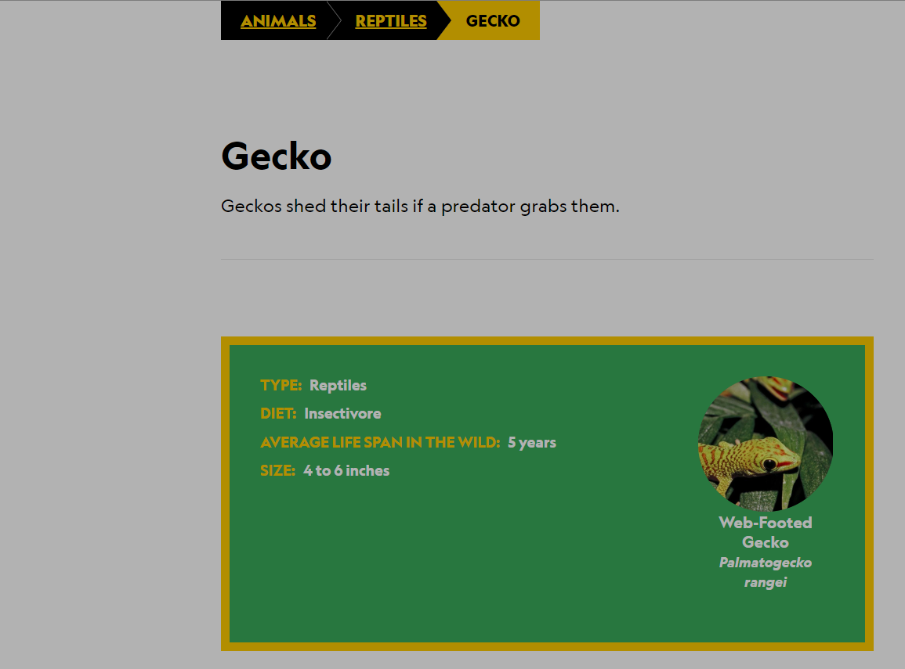
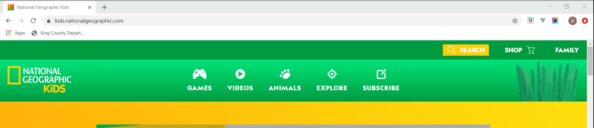

The site I chose to test is National Geographic Kids website. I chose this website mainly because the test subjects I had access to were kids. I wanted to find a site that would be somthing that would interest them.
The Test
The purpose of the test was to see if a school age child could navigate the website on their own without the help of an adult. Each child was asked what they first noticed about the site and what they thought the site was used for. Then each child was asked to complete three tasks. The First task was to find information about Geckos. The second task was to find the action game "Just Joking: funny or not". The third task was to explore the Us State Florida.
The Results
Each child notcied all the different things they could do on the site. The first things noticed were the games tab and all the pictures of animals.
Each child speculated that the site was for learning about nature and animals.
For the first task there were two different paths that were followed to find information about Geckos. The first path was to click on the animals tab, click on animals and then click on Geckos. 
The second path was to use the search feature on the top right of the page to search "Geckos", lick on "Geckos" and then scroll through the page to find the info they needed. 
The first path was more efficient than the second path. The first path was kept in the same tab but the second path opened two new tabs for a total of three tabs. The second path made it harder for the child to go back and find other animals easily.
For the second task each child followed the same path. The path they followed was to click on games, click on action and then scrolled down until they found the game "Just joking:funny or not".
For the third task each child followed the same path like they did for the second path. The path they followed was to click on the explore tab, click on U.S. States and then they scrolled down to Florida.
The Next Steps
This site is very well done. The children didn't have any issues completing the tasks they were asked to complete. The only suggestion that I have from this test is to have the search results kept in the same tab instead of opening a new tab for each thing selected. If a child wanted to search for something else when the first search is done they would have even more tabs open up. If they searched lots of items they could get lost in tons of different tabs.